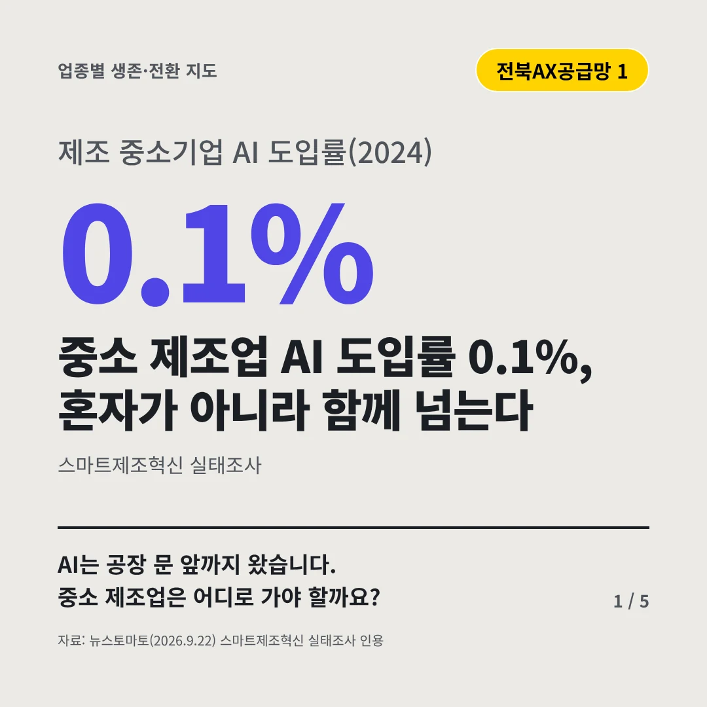
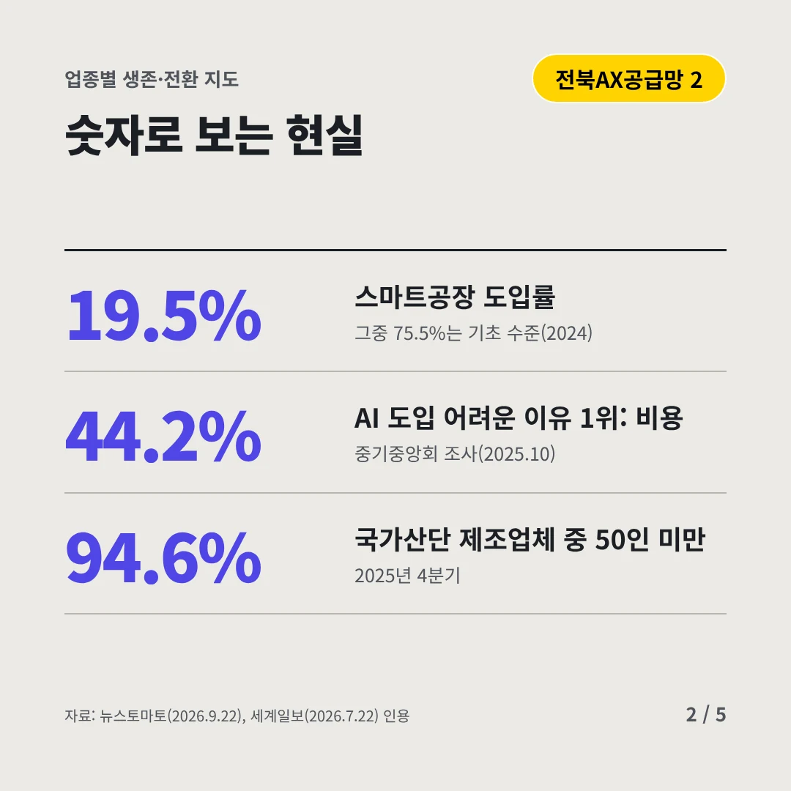
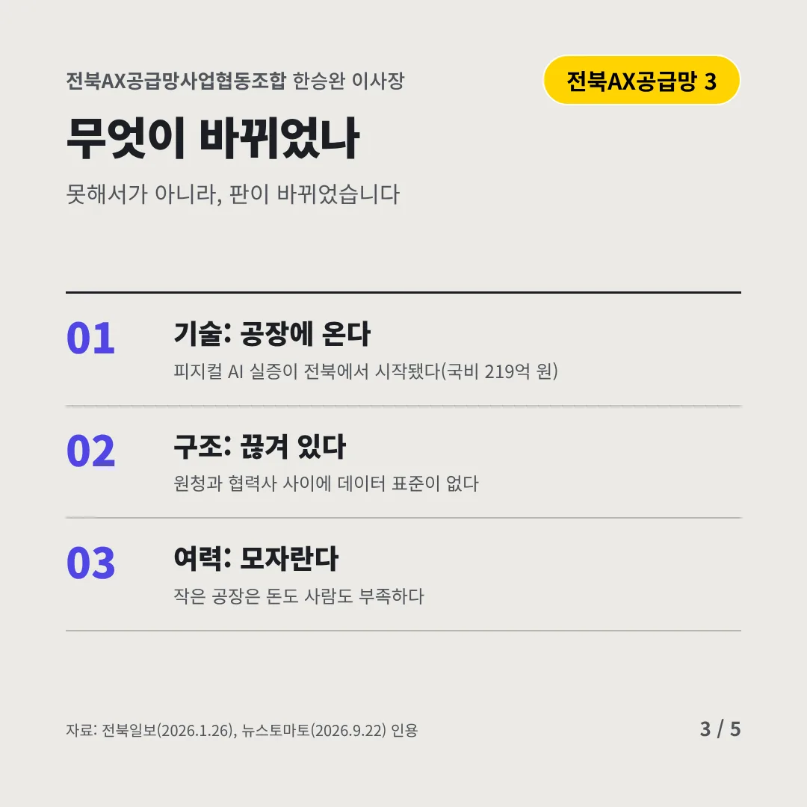
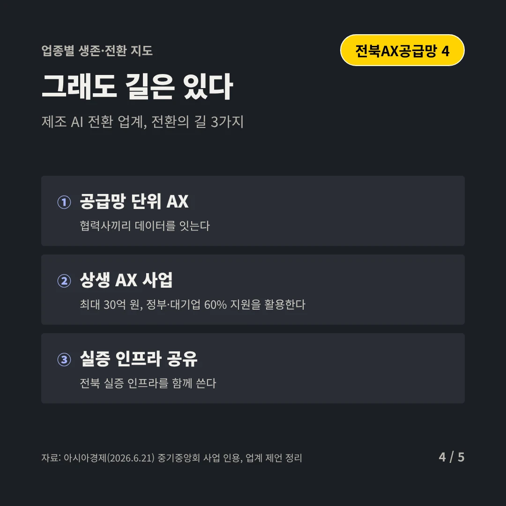
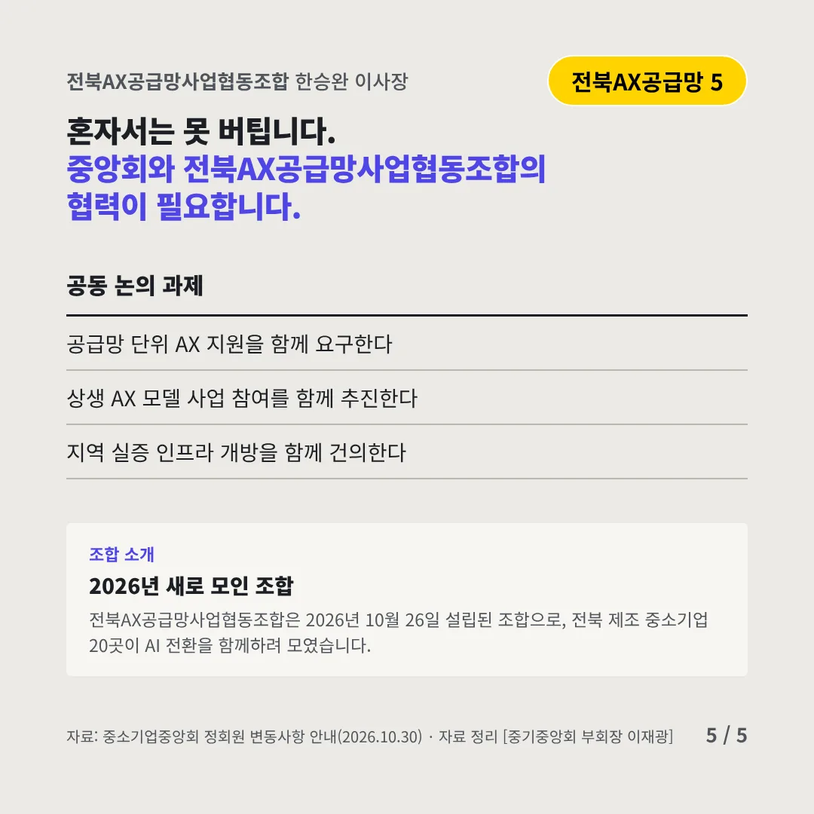
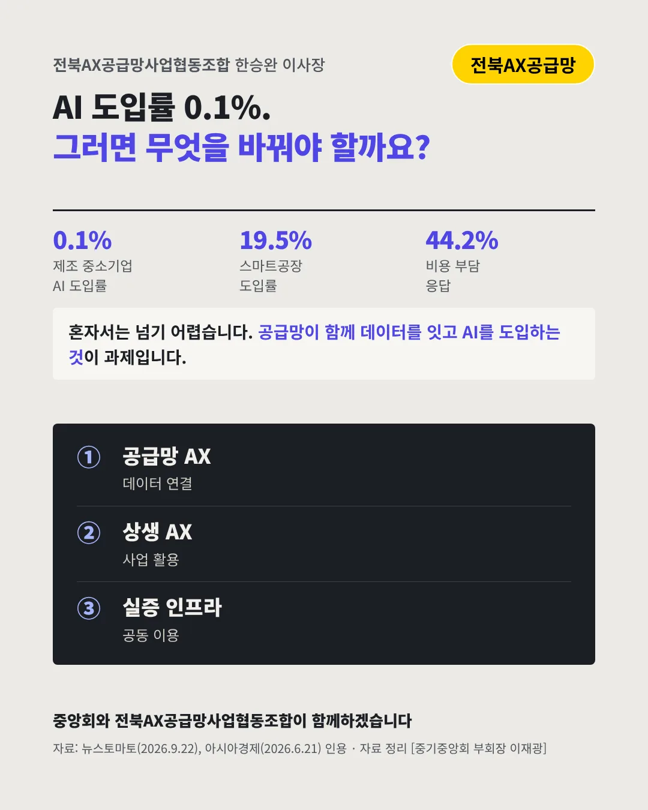

전북AX공급망사업협동조합
중소 제조업 AI 도입률 0.1%, 혼자가 아니라 함께 넘는다
0.1% 제조 중소기업 AI 도입률(2024)






AI는 공장 문 앞까지 왔습니다. 중소 제조업은 어디로 가야 할까요?
숫자로 보는 현실
- 19.5%스마트공장 도입률그중 75.5%는 기초 수준(2024)
- 44.2%AI 도입 어려운 이유 1위: 비용중기중앙회 조사(2025.10)
- 94.6%국가산단 제조업체 중 50인 미만2025년 4분기
무엇이 바뀌었나
- 기술: 공장에 온다피지컬 AI 실증이 전북에서 시작됐다(국비 219억 원)
- 구조: 끊겨 있다원청과 협력사 사이에 데이터 표준이 없다
- 여력: 모자란다작은 공장은 돈도 사람도 부족하다
그래도 길은 있다
- 공급망 단위 AX협력사끼리 데이터를 잇는다
- 상생 AX 사업최대 30억 원, 정부·대기업 60% 지원을 활용한다
- 실증 인프라 공유전북 실증 인프라를 함께 쓴다
한 장 요약

조합 소개
전북AX공급망사업협동조합은 2026년 10월 26일 설립된 조합으로, 전북 제조 중소기업 20곳이 AI 전환을 함께하려 모였습니다.
자료: 뉴스토마토(2026.9.22), 세계일보(2026.7.22), 전북일보(2026.1.26), 아시아경제(2026.6.21)